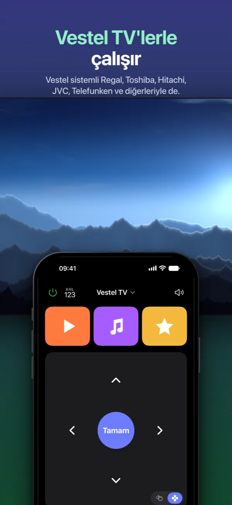
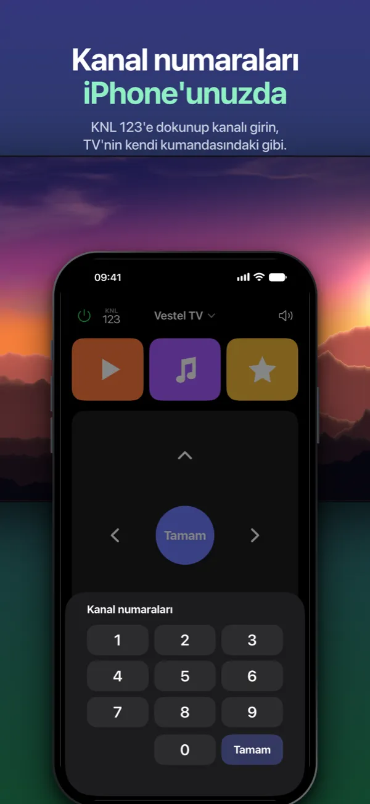
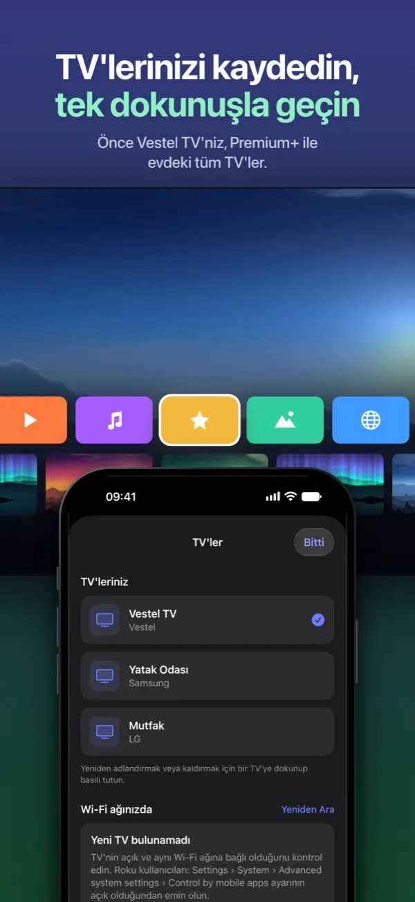

iPhone ile Vestel kumanda
Cingle Remote, Vestel'in kendi akıllı sistemini kullanan TV'leri ev Wi-Fi'ınız üzerinden iPhone'unuzdan kontrol eder. Vestel bu TV'leri birçok marka için üretir: Vestel, Regal, Toshiba, Hitachi, JVC, Sharp, Telefunken, Finlux, Medion, Bush, Alba, ProCaster, Celcus ve bazı Panasonic modelleri. iPad'iniz, Apple Watch'unuz ve Mac'iniz de aynı TV'yi kontrol edebilir.
Vestel TV'nizde neler yapabilirsiniz
- Kanal numaraları için rakam tuşları: TV'nin kendi kumandasındaki gibi
- Ses, sessiz, kanallar, oynat/duraklat ve 10 saniye atlama; iPhone'unuzun ses düğmeleri TV'nin sesini değiştirir
- Geniş bir alanda kaydırın ve dokunun ya da oklar ve OK'u kullanın
- Birden fazla TV'yi kaydedin, tek dokunuşla geçin (Premium+)



Vestel TV'nizi bağlamak
- TV'yi açın ve iPhone'unuzla aynı Wi-Fi ağına bağlı olduğundan emin olun.
- TV'nizde Menu'ye basın ve Sistem › Ayarlar › Diğer altında Sanal Uzaktan Kumanda'yı açın. Kod gerekmez.
- Cingle'ı açın. TV'yi kendisi bulur; iOS, Cingle'ın yerel ağınızdaki aygıtları bulmasına izin vermek isteyip istemediğinizi sorduğunda İzin Ver'e dokunun. TV'yi IP adresiyle de ekleyebilirsiniz: Ayarlar › Cihazlar › IP adresiyle TV ekle.
Google TV veya Android TV kullanan modeller Google TV olarak bağlanır: TV'nin gösterdiği 6 karakterlik kodu girersiniz.
Kendi sistemini kullanan Arçelik, Beko ve Grundig TV'ler desteklenmiyor; Google TV veya Android TV kullanan modelleri Google TV olarak bağlanır.
Apple Watch'ta
TV'yi iPhone'unuzda eşleştirin, Apple Watch'unuz da hazır olsun; kod girmeniz gerekmez. Gezinmek için kaydırın ve dokunun, ses için Digital Crown'u çevirin. Watch, komutları iPhone'unuz üzerinden gönderir, bu yüzden iPhone'unuz yakında olmalıdır.
Mac'te
Mac'iniz aynı TV'leri bulur. Ok tuşlarıyla gezinin, Return ile seçin, Boşluk ile oynatın veya duraklatın, Delete ile geri gidin; "Kumanda" menüsünde gerisi var.
Cingle'ın desteklediği diğer TV'ler
Bu sayfalar İngilizce. Cingle'ın desteklediği tüm TV'ler.
Cingle Remote'u edinin
iPhone'unuz, iPad'iniz, Apple Watch'unuz ve Mac'iniz TV'niz için hazır. Hiç reklam yok.
iOS 18, iPadOS 18, watchOS 10 ve macOS 15 veya üstüyle çalışır.
Sorunuz mu var? Destek sayfası sık sorulanları yanıtlıyor ve geliştiriciye nasıl ulaşacağınızı anlatıyor.